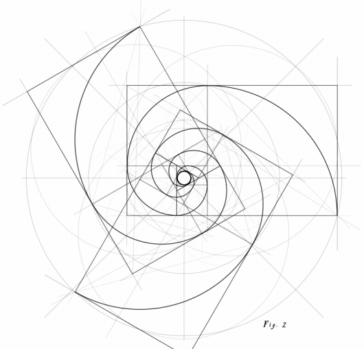

Abraxas — preparando o modelo na memória
abraxas · v.0
passo 04 / 04
local · offline

passo iv
·
despertar
preparando
Despertando o oráculo,
um instante apenas.
abrindo os pesos
7.3 gb
alocando a memória
5.4 gb · ram
semeando o contexto
4 096 tokens
aquecendo o forno
—
carregando
Llama 3.1
8B · q4_k_m